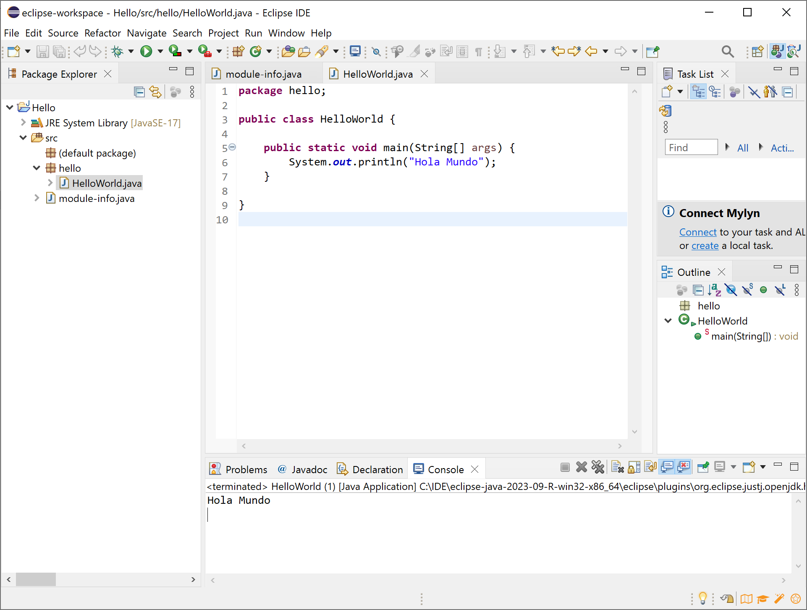

<section data-markdown>
<script type="text/template">
## Integrated Development Environments
### Using Eclipse
</script>
</section>

<section>
    <h2>Eclipse</h2>
    <table>
        <tr>
            <td valign="middle" width="30%"></td>
            <td>
                <ul>
                    <li>Initially conceived to work with Java</li>
                    <li>Supports many languages via plugins: Python, PHP, C/C++...</li>
                    <li>Open source and free</li>
                    <li>Supported by Eclipse Foundation</li>
                </ul>
            </td>
        </tr>
    </table>
</section>

<section data-markdown>
<script type="text/template">
## First steps:

- Extract the contents of the downloaded file to the final directory.
- Run the "Eclipse.exe".
- Specify a Workspace

<div align="center">
    
</div>

</script>
</section>

<section data-markdown>
<script type="text/template">
## Creating projects (1/2)

- *File* > *New project*


<div align="center">
    
</div>

</script>
</section>
    
<section data-markdown>
<script type="text/template">
## Creating projects (2/2)

- Choose project name and location
- A new empty project will be shown
- Add new class or file 
- Click on *Run* button, or `Ctrl + F11`

<div align="center">
    
</div>

</script>
</section>

